Abstract
Recent advancements in diffusion models have led to significant improvements in the generation and animation of 4D full-body human-object interactions (HOI). Nevertheless, existing methods primarily focus on SMPL-based motion generation, which is limited by the scarcity of realistic large-scale interaction data. This constraint affects their ability to create everyday HOI scenes. This paper addresses this challenge using a zero-shot approach with a pre-trained diffusion model.Despite this potential, achieving our goals is difficult due to the diffusion model's lack of understanding of "where" and "how" objects interact with the human body. To tackle these issues, we introduce AvatarGO, a novel framework designed to generate animatable 4D HOI scenes directly from textual inputs. Specifically, 1) for the "where" challenge, we propose LLM-guided contact retargeting, which employs Lang-SAM to identify the contact body part from text prompts, ensuring precise representation of human-object spatial relations. 2) For the "how" challenge, we introduce correspondence-aware motion optimization that constructs motion fields for both human and object models using the linear blend skinning function from SMPL-X. Our framework not only generates coherent compositional motions, but also exhibits greater robustness in handling penetration issues. Extensive experiments with existing methods validate AvatarGO's superior generation and animation capabilities on a variety of human-object pairs and diverse poses. As the first attempt to synthesize 4D avatars with object interactions, we hope AvatarGO could open new doors for human-centric 4D content creation.
3D static human-object composition
AvatarGO effectively produces diverse human-object compositions with correct spatial correlations and contact areas.
| 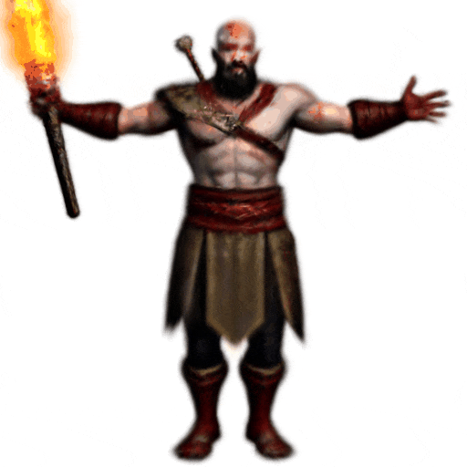 | 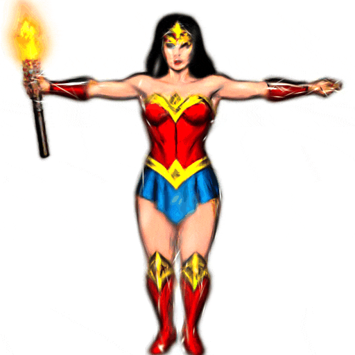 | 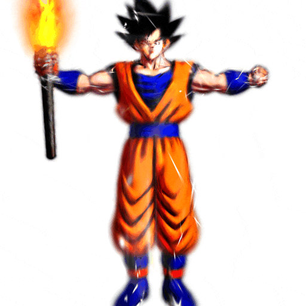 | 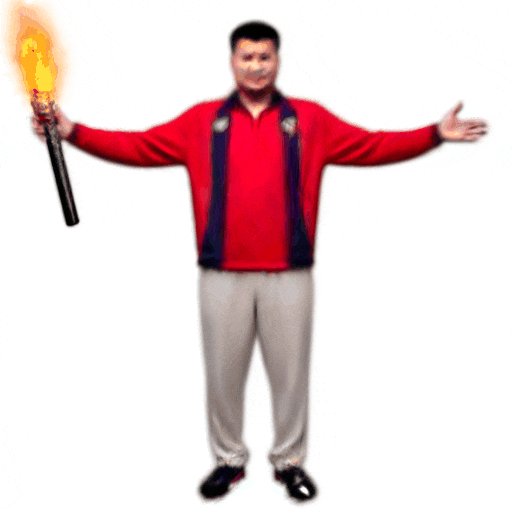 |
| Kratos in God of War holding a Torch in his hand | Wonder Woman grasping a Torch in her hand | Goku in Dragon Ball Series carrying a Torch in his hand | Yao Ming holding a Torch in his hand |
| 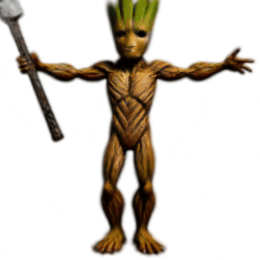 | 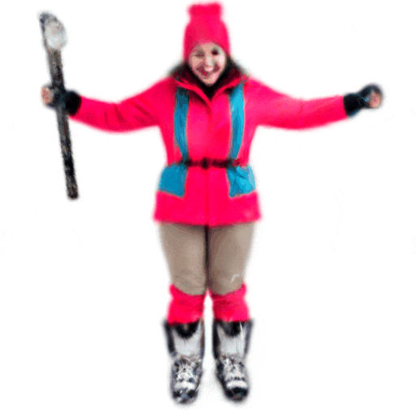 | 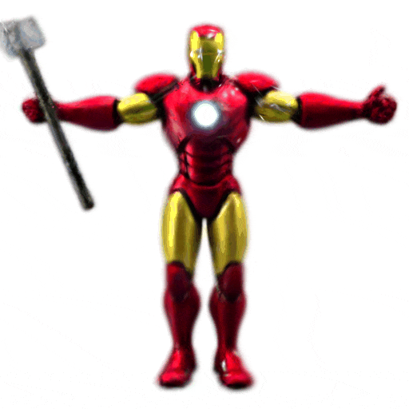 | 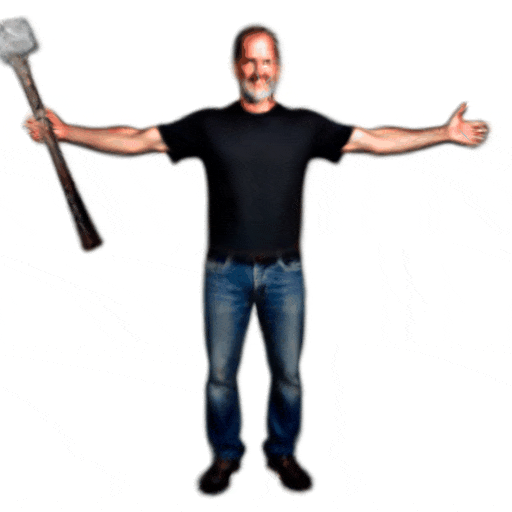 |
| I am Groot grasping an axe of Thor in his hand | Woman in ski clothes holding an axe of Thor in her hand | Iron Man maintaining an axe of Thor in his hand | Steven Paul Jobs holding an axe of Thor in his hand |
| 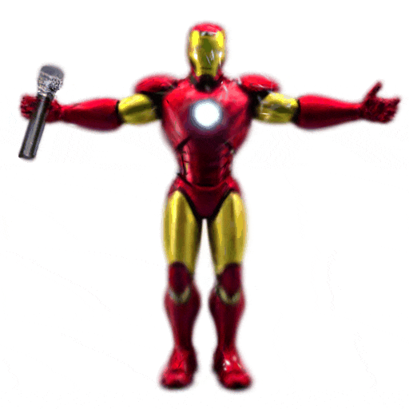 | 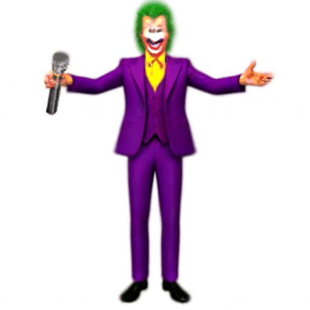 | 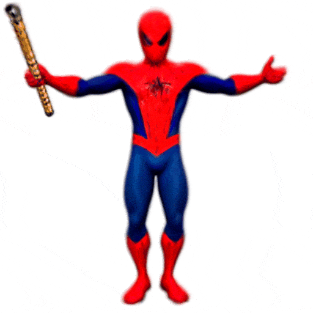 | 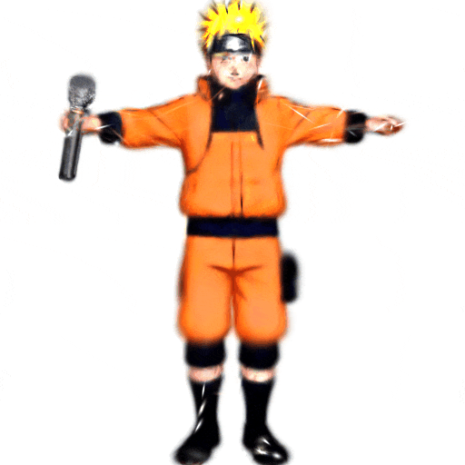 |
| Iron Man holding a microphone in his hand | Joker possessing a microphone in his hand | Spiderman holding a flute in her hand | Naruto in Naruto Series possessing a microphone in her hand |
| 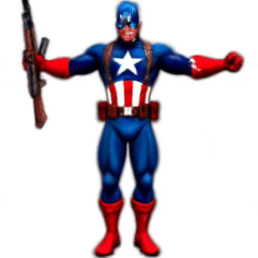 | 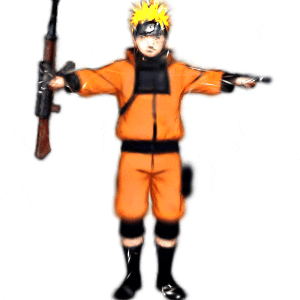 |  |
 |
| Captain America carrying an AK-47 in his hand | Naruto in Naruto Series grasping an AK-47 in his hand | Bodybuilder holding a dumbbell in his hand | Hulk maintaining a golden cudgel in his hand |
4D avatar generation with object interactions
After 3D compositional generation, AvatarGO can achieve joint animation of humans and objects while avoiding penetration issues.
| 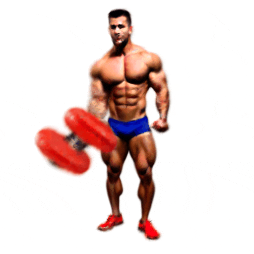 | 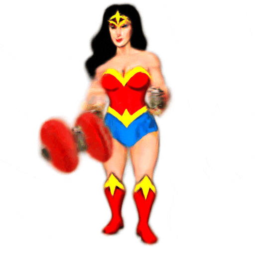 | 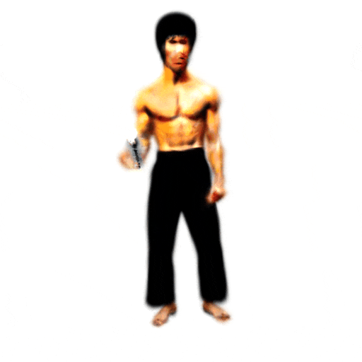 | 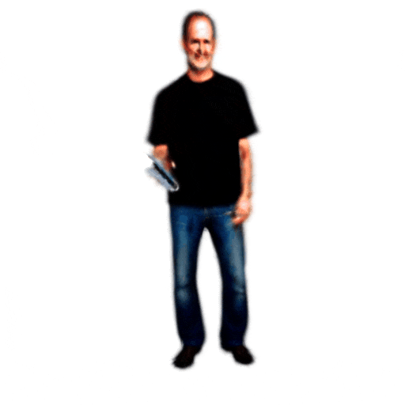 |
| Bodybuilder holding a dumbbell in his hand | Wonder Woman holding a dumbbell in her hand | Bruce Lee possessing an iPhone in his hand | Steven Paul Jobs possessing an iPhone in his hand |
| 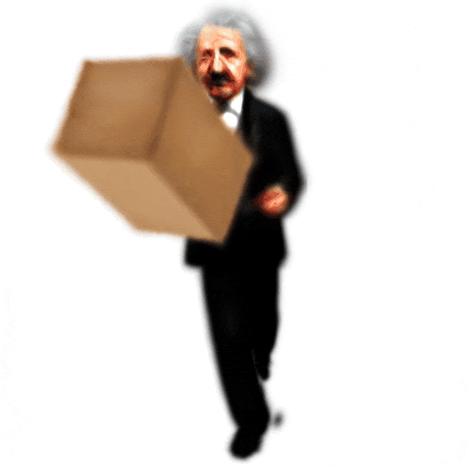 | 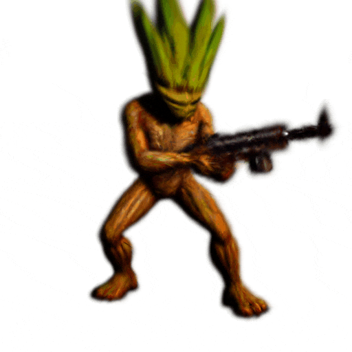 | 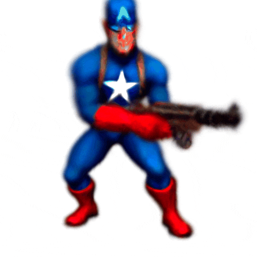 | |
| Albert Einstein carrying a box in his hand | Albert Einstein carrying a box in his hand | I am Groot holding an AK-47 in his hand | Captain America holding a AK-47 in his hand |
| 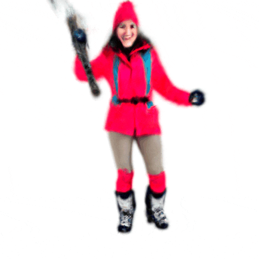 | 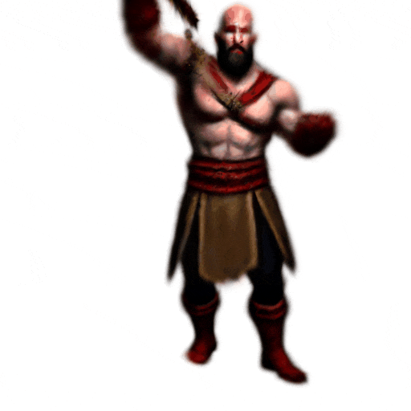 | 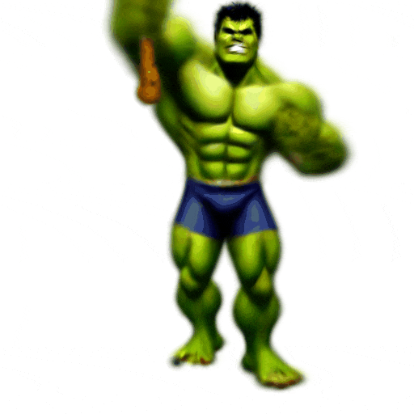 | 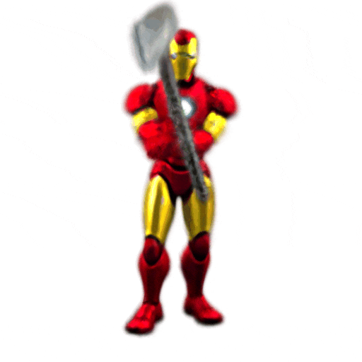 |
| Wonder Woman possessing an axe of Thor in his hand | Joker holding a Torch in his hand | Hulk maintaining a golden cudgel in his hand | Iron Man holding an axe of Thor in his hand |
| 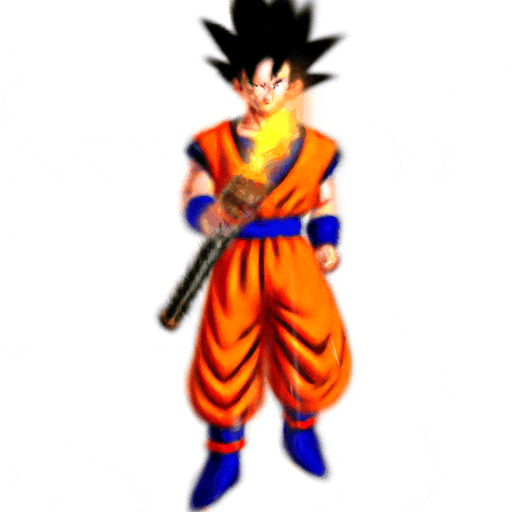 | 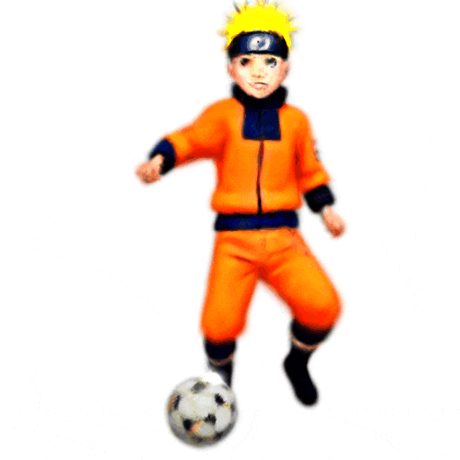 | 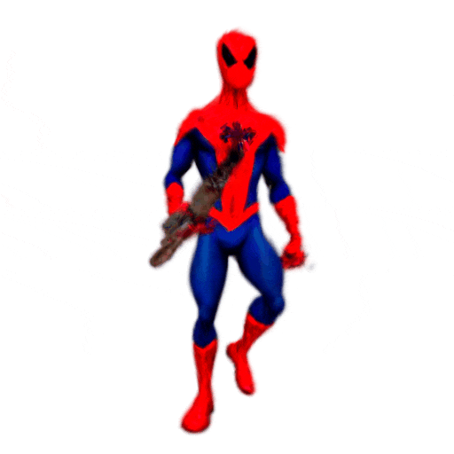 | 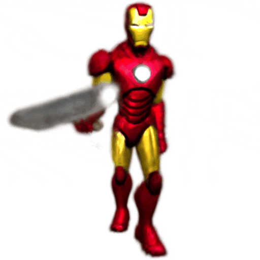 |
| Goku in Dragon Ball Series grasping a Torch in his hand | Naruto in Naruto Series stepping on a football under his foot | Spiderman holding a dumbbell in his hand | Iron Man carrying an axe in his hand |
Qualitative Comparisons
Method
AvatarGO takes the text prompts as input to generate 4D avatars with object interactions. At the core of our network are: 1) Text-driven 3D human and object composition that employs large language models to retarget the contact areas from texts and spatial-aware SDS to composite the 3D models. 2) Correspondence-aware motion optimization which jointly optimizes the animation for humans and objects. It effectively maintains the spatial correspondence during animation, addressing the penetration issues.